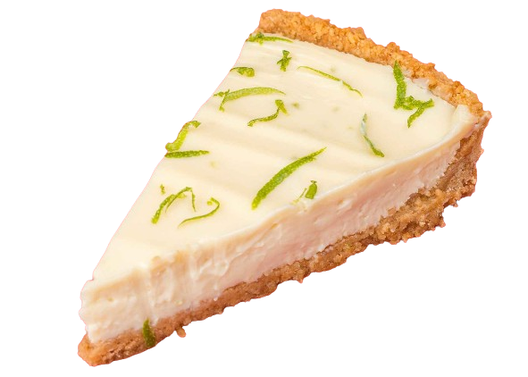

Torta de limão
A torta de limão é uma obra-prima de sabores contrastantes, combinando o azedinho do limão com a suavidade do recheio cremoso. Sua base crocante de biscoitos completa perfeitamente a textura aveludada do recheio, proporcionando um equilíbrio delicado entre o azedo refrescante e a doçura reconfortante. Essa torta é uma escolha elegante e refrescante para qualquer ocasião, perfeita para fechar uma refeição especial com seu sabor cítrico inesquecível.
Modo de preparo
Ingredientes- 200g de biscoitos maisena
- 100g de manteiga
- 1 lata de leite condensado
- 1/2 xícara de suco de limão
- Raspas de 1 limão
- 1 lata de creme de leite sem soro
- Chantilly para cobertura
- Fatias finas ou raspas de limão para decorar
- Triture os biscoitos e misture com a manteiga derretida. Forre uma forma e leve à geladeira.
- Em um liquidificador, bata o leite condensado com o suco e as raspas de limão, acrescente o creme de leite e misture até que esteja bem incorporado.
- Despeje sobre a base de biscoitos e leve à geladeira por 4 horas ou até que a torta esteja firme.
- Decore a torta com chantilly e fatias finas ou raspas de limão.